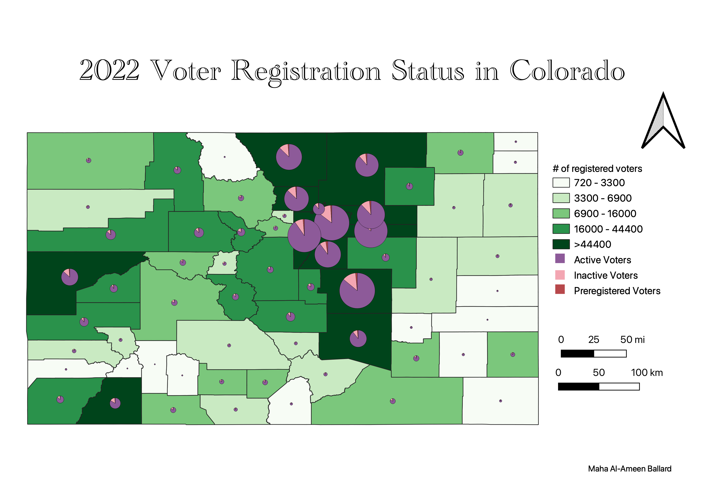

Homework 7: Make a choropleth or proportional symbol map
In this assignment, I created a choropleth and symbol map of 2022 voter registration status in Colorada

Data used for this project
Link to cleaned csv dataset on GitHub
Link to geoJSON on GitHub